也紀念我們永遠的朋友 李士傑先生（Shih-Chieh Ilya Li）。
自己動手分割硬碟 - Parted Magic
Parted Magic 介紹
硬碟的功用在於安裝作業系統、安裝軟體、儲存各類型的檔案，一般使用者對於硬碟管理不熟悉，往往將檔案隨意亂存，不知不覺中才發現磁碟機已經存滿了，此時想整理硬碟，想分割多個磁區卻不知道該怎麼做，以下整理了使用者常遇到的硬碟分割問題：
1. 為了將檔案分門別類，想分割多個磁碟機。
2. 新買了一顆硬碟，卻不知道如何分管理、分割、格式化。
3. C 磁碟機的容量過小，想增加 C 磁碟機空間。
4. 新買了套裝電腦，磁碟分割形式不是自己想要的。
5. 整台電腦只有一個磁碟機，導致磁碟重組非常慢。
6. 想要安裝多重作業系統，卻沒有多餘的分割區。
這時，如果有一套硬碟分割管理軟體，以上問題都可以迎刃而解。市面有一些不錯的商業軟體，但磁碟分割是一種臨時性的工作，往往分割完後就再也用不到了，特地花一筆錢去購買軟體實在很不划算，在此介紹自由軟體中一套相當出色的硬碟分割管理軟體 Parted Magic ，簡單的操作方式，友善的圖性化介面，讓您一步一步完成磁碟分割的工作。
有別於一般分割軟體須安裝於作業系統上，Parted Magic 可製作成一片 LiveCD 或 USB 開機碟，意即沒有作業系統的限制，不管你使用何種作業系統，甚至是一顆空白硬碟，Parted Magic 都可以幫你完成磁碟分割工作。
事實上，與一些知名 Linux 發行 LiveCD 一樣，Parted Magic 本身也是一個作業系統，它蒐集各種工具程式，從硬碟分割軟體，到各種備份支援程式，作業系統加上各種工具不到 100 MB，儼然成為一張多功能的救援光碟。而它的核心程式 GParted 是一個圖形介面的硬碟分割工具，用游標拖拉區塊，就能輕易的新增、編輯、合併或是複製分割區。它支援的檔案系統相當多元，無論是 Windows、Linux 甚至是 Mac 它都能支援，例如：ext2、ext3、ext4、fat16、fat32、hfs、hfs+、jfs、linux-swap、ntfs、reiserfs、reiser4、xfs 等等。
下載 Parted Magic
Parted Magic 可選擇的開機方式有好幾種，包含光碟開機、USB 磁碟開機、PXE 開機等，每一種開機方式都對應不同檔案，你可以至官網的下載網頁，點選 Stable versions 的映像網站，下載所需的檔案。若您第一次使用 Parted Magic，建議你下載 LiveCD 的光碟映像檔 (pmagic-x.x.iso.zip)。
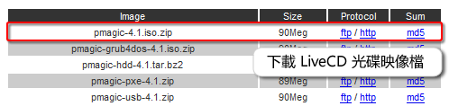
製作 Parted Magic LiveCD
下載的檔案可以利用解壓縮程式，如：7-Zip、WinZip，將檔案解壓縮至適當位置，你可以得到一個光碟映像檔，名稱為 pmagic-x.x.iso (x.x 為版本編號)，目前使用的是 2009 年 5 月釋出的 4.1 版，為了製作 LiveCD ，還須使用光碟燒錄程式，如 Nero、InfraRecorder，將映像檔燒錄成光碟。接下來以自由軟體燒錄程式 InfraRecorder 為例，示範製作光碟的過程：
【步驟一】 選擇燒錄映像檔功能
【步驟二】 選擇光碟映像檔 pmagic-x.x.iso
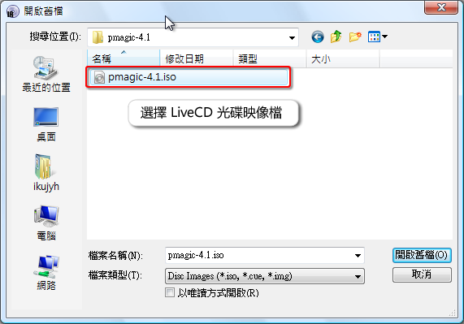
【步驟三】 開始燒錄光碟
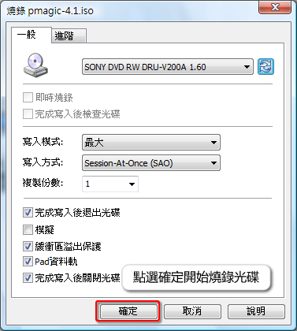
當光碟燒錄完成後，即可利用此 LiveCD 開機，進入 Parted Magic 畫面。
以 Parted Magic LiveCD 開機
若想以 Parted Magic LiveCD 開機，請記得進入 BIOS 修改開機順序，將光碟設為第一順位，某些主機板廠商 (如：ASUS) ，可支援 F8 鍵，在出現 BIOS 畫面時，點選 F8 鍵開啟開機裝置選單，選擇光碟開機。
啟動後的第一個畫面，是 Parted Magic 根據各種不同環境所列出開機選項，請根據提示選擇適合您的開機選項。
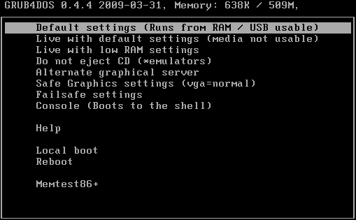
選項說明
Default setting ：圖形介面 (一般使用者請選擇此選項)
Live with default settings ：保留光碟於光碟機中 (適合記憶體 128-512 MB 的用戶)
Live with low RAM settings ：低記憶體設定 (使用最少記憶體，關閉部分功能)
Do not eject CD ：適合虛擬主機用戶
Alternate graphical server ：圖形介面二 (當選項一失敗時，可選擇此選項)
Safe Graphics settings ：圖形安全模式 (顯示卡為 VGA 端子)
Failsafe settings ：文字安全模式 (顯示卡為 VGA 端子，關閉部分功能)
Console ：文字介面
淺談硬碟分割
分割硬碟前，必須先讓大家瞭解一下磁碟分割的原理，有助於之後實際操作。一顆全新的硬碟一定要經過分割與格式化，才能提供作業系統做進一步的規劃與利用，目前市面上的硬碟，動輒幾百 GB，甚至以 TB 計算的硬碟也不難見到，若您完全不分割您的硬碟，不僅檔案存放難以管理，執行「硬碟重組」維護硬碟時，將相當費時，浪費你寶貴的時間。
開啟 Windows 作業系統中的「我的電腦」，可以看到一個或多個磁碟機，通常會以 C: 或 D: 命名，這就是硬碟分割所產生的 Partition 磁碟分割區。一個硬碟可以畫分多個分割區，但硬碟分割時有許多限制，您要先了解各種分割區「主要分割區」、「延伸分割區」、「邏輯分割區」的特性與相互關係，不管你使用何種工具，文字介面的 fdisk，還是圖形介面的 Parted Magic，分割時的限制與特性是相同的。
主要分割區 (Primary Partition)：最基本的分割區，其中一個重要用途為安裝作業系統，當你分割一個主要分割區時，通常會被問到一個特性：是否要啟動此分割區的旗標 (flag)，當設定為啟動 (boot)時，只要一開機，這個分割區的作業系統將自動被啟動，故只允許一個主要分割區的旗標設為啟動。
延伸分割區 (Extended Partition)：一顆硬碟最多只能擁有四個主要分割區，為了增加分割區的數量，故有了延伸分割區的產生，當你將一個分割區設定為延伸時，事實上，它不會出現於「我的電腦」的磁碟機中，意即你無法存取它，如同它的名字，它只是一個「延伸」的概念，是為了建立邏輯分割區而存在。而延伸分割區有一個重要限制，同一個硬碟中只能有一個延伸分割區。
邏輯分割區 (Logical Partition)：延伸分割區就像一顆硬碟一樣，可以在其中劃分自己的分割區，而在延伸分割區底下的分割區就稱為邏輯分割區。邏輯分割區只能存儲一般檔案，無法安裝作業系統，但它卻沒有數量限制，理論上你可以分割無限多個邏輯分割區，但由於作業線統的限制，應該避免在同一顆硬碟上，製作超過十二個邏輯分割區。
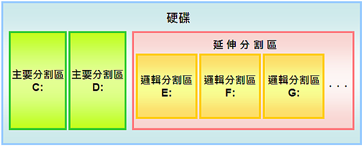
硬碟分割限制提醒：
◎ 主要分割區加延伸分割區數量不能大於四。
◎ 一顆硬碟的延伸分割區最多只能一個。
◎ 分割時，至少存在一個主要分割區或延伸分割區。
◎ 只允許一個主要分割區的旗標設為啟動。
◎ 邏輯分割區數量建議小於等於十一個(依作業系統而定)。
瞭解分割區後，接下要來說明的就是與硬碟分割息息相關的「檔案系統」，也就是大家可能比較常聽到的格式化。何謂檔案系統？意即資料儲存在硬碟的記錄方式，假設硬碟是一座圖書館，每筆資料為一本書，當書本放入圖書館時，必須記錄存放規則，記錄書本編號、書名、存放位置等，而檔案系統對於磁碟機而言，就是一種資料的存放規則。每一種作業系統都有自己的檔案系統，如 Windows 常見的檔案系統為 FAT32、NTFS， Linux 則為 EXT2、EXT3 等。當您在建立一個分割區時，必須指定它的檔案系統，作業系統才知道該如何存取這個分割區，當你開機後才能看到這個磁碟區，建立檔案系統的過程即稱為格式化。
以下列出 GParted 所提供的列表，針對各個檔案系統它所支援的各種動作：
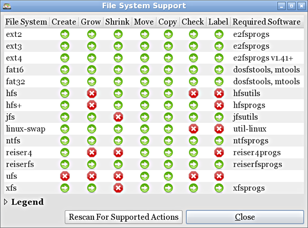
如何分割新買的硬碟
◎分割一個主要分割區
【步驟一】進入 Parted Magic 首頁後，點選 Partition Editor (分割區編輯器)，開啟 GParted。
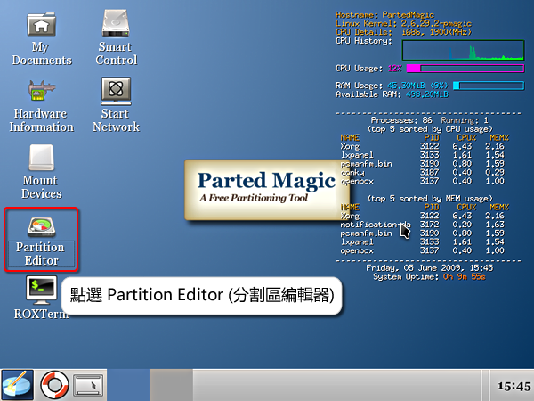
【步驟二】點選右上方的下拉式選單，選擇新購買的硬碟，範例中為一顆 8 GB 的硬碟 。
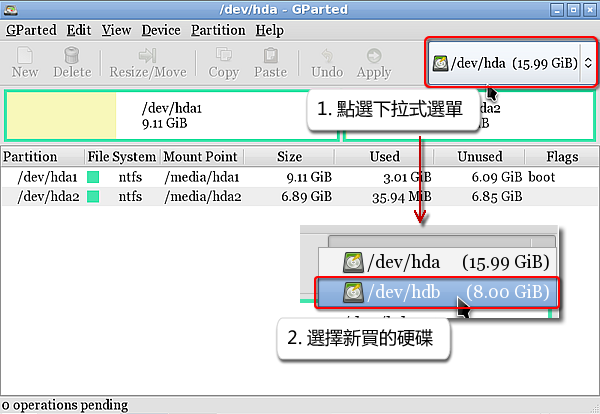
【步驟三】由於新的硬碟無任何分割區，可看到一灰色的長條區塊代表你的硬碟尚未做任何分配，請選擇此區塊，之後點選新增按鈕。
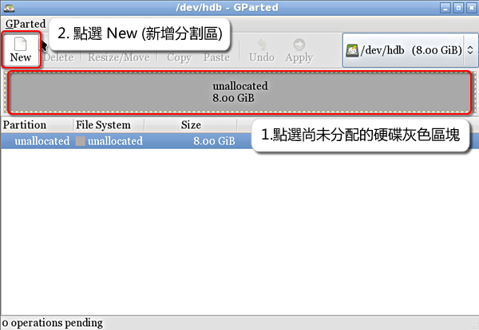
【步驟四】由於建立分割區會清除硬碟中所有資料，系統會詢問你是否確認要建立，請直接點選 Create (建立) 按鈕。
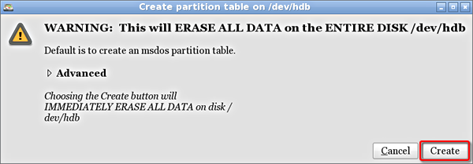
【步驟五】確認建立後，請再次點選新增按鈕，此時會出一建立分割區視窗，請拖曳視窗中的長條圖來決定分割大小，也可以從 New Size (新增大小) 輸入明確的數字，在此示範將硬碟的一半容量建立成主要分割區。
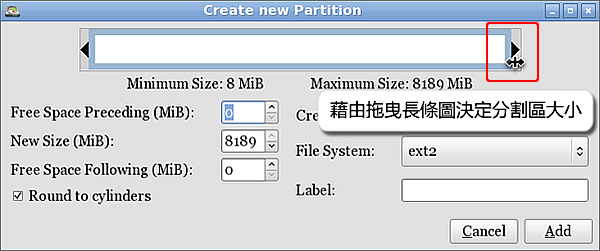
【步驟六】接下來請選擇分割區的形式，點選 Create as (建立成) 下拉式選單，將此區塊建立成主要分割區。
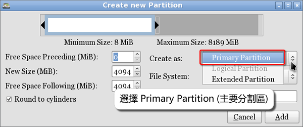
【步驟七】每一個分割區都必須指定一種檔案系統，如果您的作業系統為 Windows，建議選擇 ntfs，而 Label (標籤) 為磁碟機的名稱，在此可填或不填，使用者可開機後再從 Windows 作業系統中修改，確認後請點選 Add (新增)。
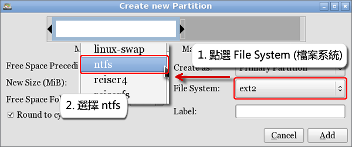
【步驟八】系統會將排程預定的工作顯示在下方，再次確認工作是否正確，確認後點選 Apply (套用)。
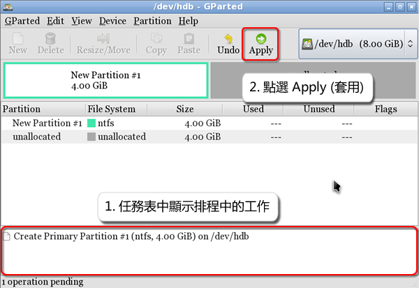
【步驟九】系統此時會顯示警告訊息，確認後點選 Apply (套用)，即開始建立分割區。
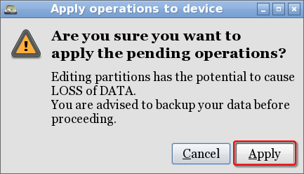
【步驟十】 所有排定的工作全部完成，點選 Close (關閉)。
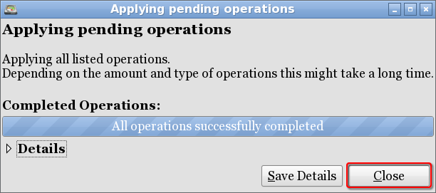
【步驟十一】 主要分割區建立完成。
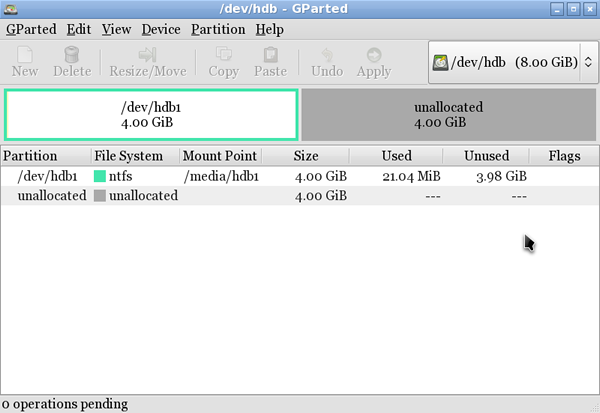
◎分割一個邏輯分割區
【步驟一】當完成主要分割區的建立，剩下的未分配空間，我們將示範如何建立邏輯分割區，請先點選未分配的剩餘空間，之後點選 New (新增) 按鈕，建立新的分割區。
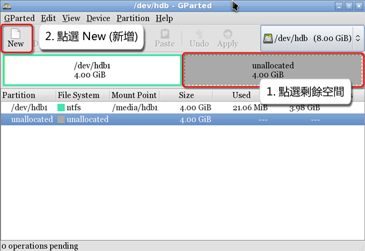
【步驟二】建立邏輯分割區前必須先建立延伸分割區，請開啟 Create as (建立成) 的下拉式選單，選擇 Extended Partition (延伸分割區)，完成後直接點選 Add (新增)，建立延伸分割區。
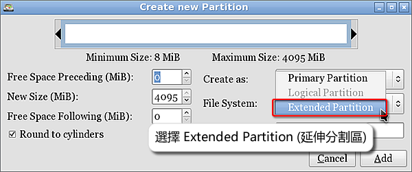
【步驟三】點選剛剛建立的延伸分割區，完成後點選新增按鈕，以建立邏輯分割區。

【步驟四】可用拖曳的方式決定新分割區的大小，在此設定新分割區為 2 GB。由於本分割區建立於延伸分割區中，故 Create as 分割區形式只能選擇 Logical Partition (邏輯分割區)，請指定一種 File system (檔案系統)，如果您的作業系統為 Windows，建議選擇 ntfs，最後，點選 Add (新增) 按鈕建立分割區。
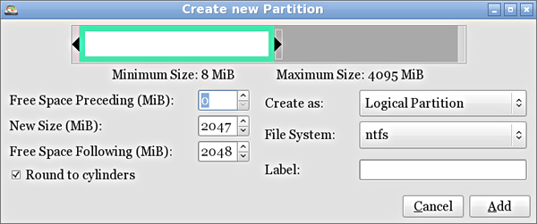
【步驟五】由圖可知，已建立一邏輯分割區，同理將剩餘空間建立為另一邏輯分割區。
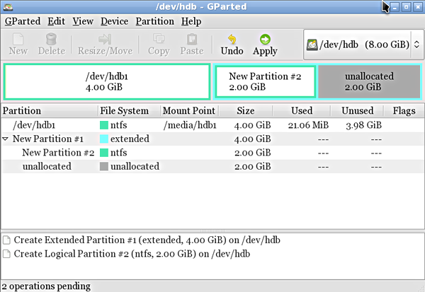
【步驟六】一個延伸分割區，二個邏輯分割區，我們已預定三項工作，系統會將排程預定的工作顯示在下方，再次確認各項工作是否正確，確認後點選 Apply (套用)。
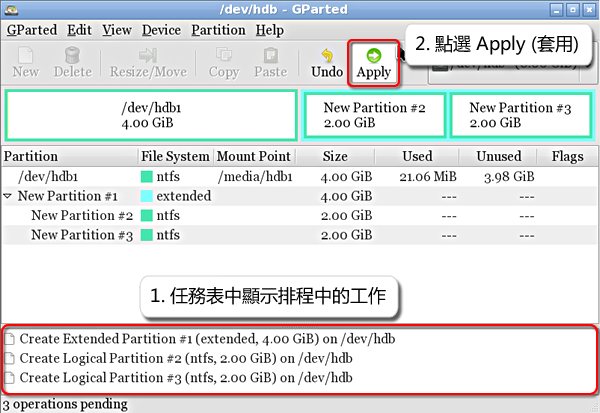
【步驟七】邏輯分割區建立完成，我們可看見延伸分割區中有兩個邏輯分割區。
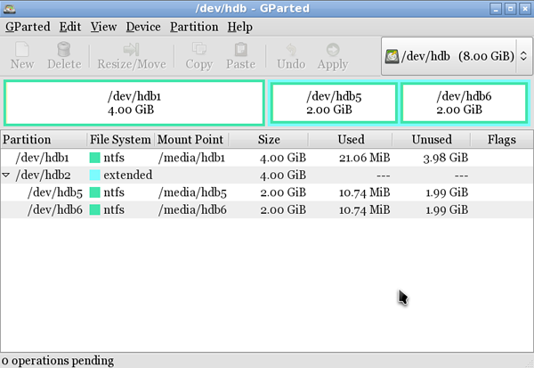
【步驟八】重新開機檢視剛剛建立分割區是否正確，由於 Label (標籤) 設定為空白， Windows 會將各個磁碟自動命名為比「本機磁碟」。
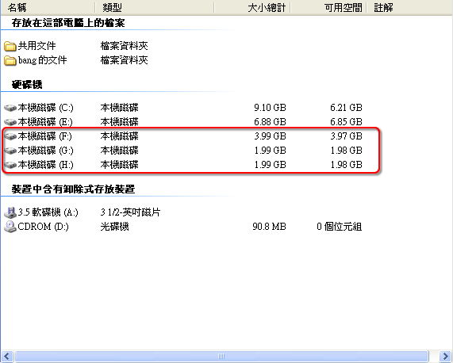
如何管理既有的硬碟
◎劃分新的分割區
【步驟一】作業系統安裝於一顆 16 GB 的硬碟中，我們希望能利用多餘的空間，新增一個分割區，由於本次操作有資料遺失的風險，請記得備份硬碟中的重要資料。
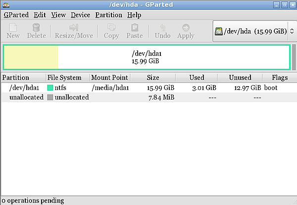
【步驟二】於此硬碟上點選滑鼠右鍵，並選取 Resize/Move (變更大小/移動)，我們將調整 C 磁碟的大小。
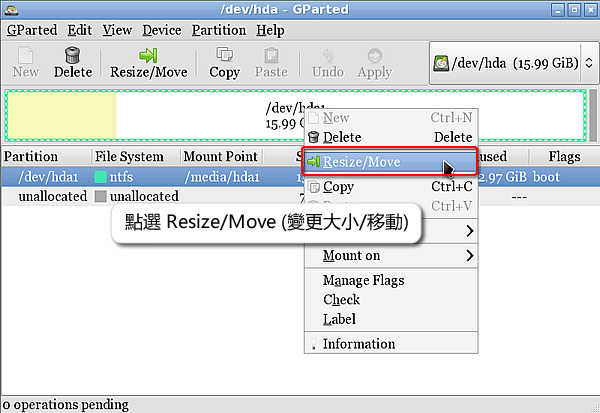
【步驟三】使用者可拖曳區塊調整分割區大小，也可直接輸入確切的數字，在此我們將示範利用一半的空間新增第二個分割區。
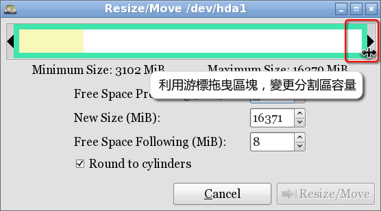
【步驟四】確定分割區大小後，點選 Resize/Move (變更大小/移動)。
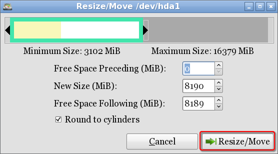
【步驟五】有關已安裝作業系統的硬碟相關工作，務必獨立執行，故當分割區變更大小後，請直接點選 Apply (套用)。
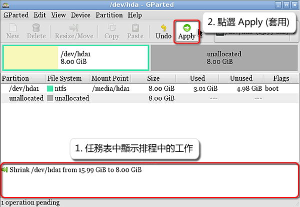
【步驟六】系統此時會顯示警告訊息，再次提醒，若您硬碟中有重要資料，請記得備份，確認後點選 Apply (套用)。
【步驟七】 排定的工作完成，點選 Close (關閉)。
【步驟八】 變更大小後須重新開機，請記得移除開機光碟，或直接以硬碟開機。
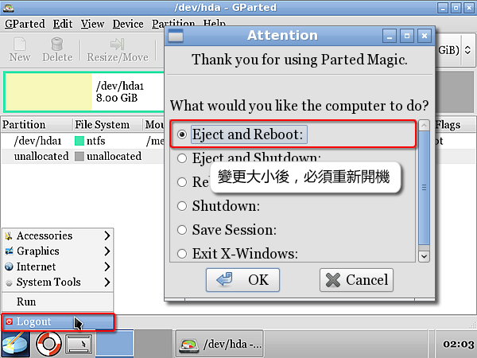
【步驟九】由於檔案系統為 ntfs ，系統在開機時會重新確認檔案系統的一致性，請務必讓此動作完成，以確保能作業系統能正常開機。
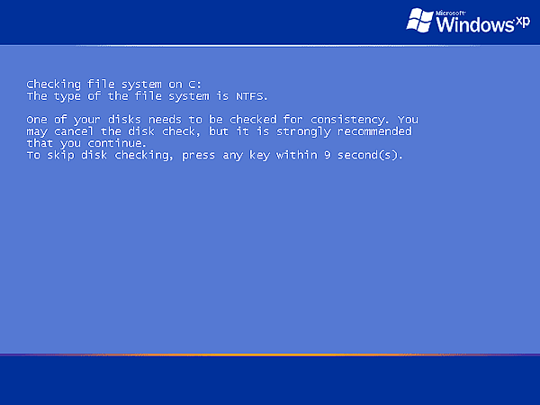
【步驟十】開機後，再回到 Parted Magic，利用剩餘的空間建立第二個分割區。
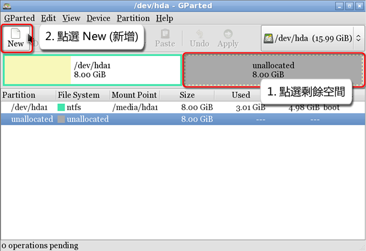
【步驟十一】以剩餘的空間建立主要分割區，主要分割區製作方式可參考「如何分割新買的硬碟」。示範劃分新分割區完成。
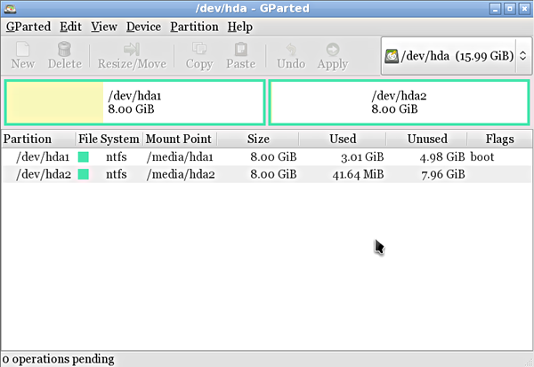
◎調整分割區大小
【步驟一】變更存有資料的分割區，建議操作前請備份硬碟中的重要資料。假設今天 C 磁碟機的空間不足，想利用變更磁碟機大小的方式，增加 C 磁碟機的容量，由於沒有多餘的未分配空間，必須先將有多餘空間的磁碟機縮小，新增未分配空間。
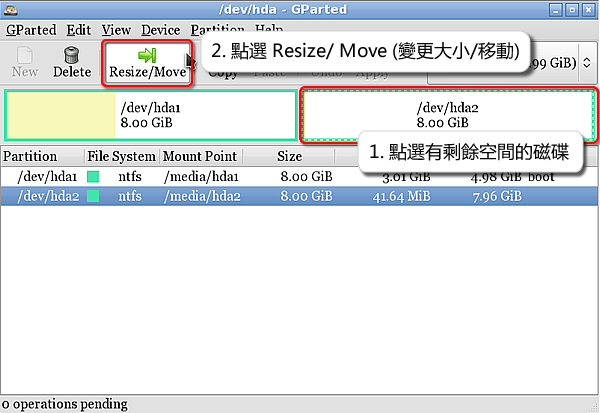
【步驟二】拖曳滑鼠，將選擇的分割區容量變小，請將未分配的空間置於分割區的前方。
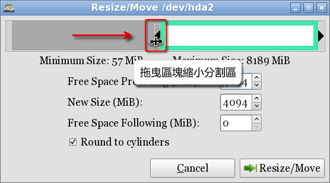
【步驟三】縮小後，C 磁碟機的後方可得到一未分配空間，建議含有作業系統的分割區獨力執行工作，所以當完成大小變更後，點選 Apply (套用)，開始執行工作。
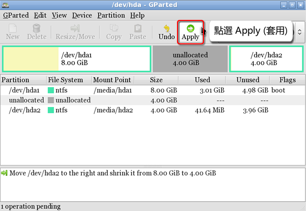
【步驟四】完成後即可開始增加 C 磁碟機容量，請選擇分割區，並點選 Resize/Move (變更大小/移動)。
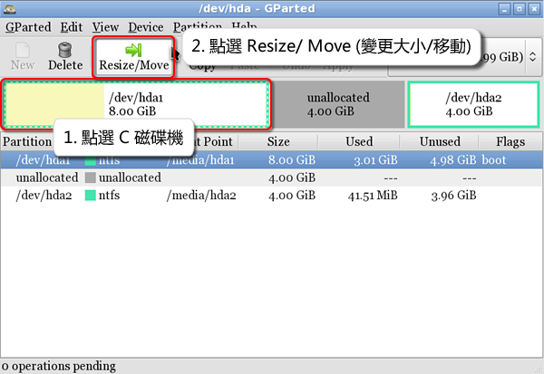
【步驟五】拖曳區塊，將剩餘未分配的空間填滿。
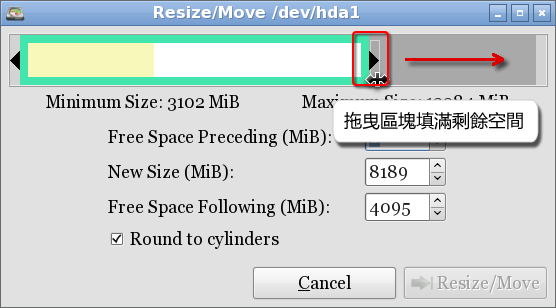
【步驟六】填滿後，點選 Resize/Move (變更大小/移動)。
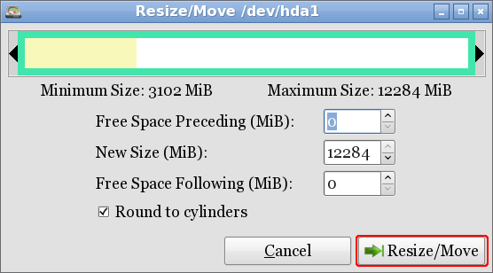
【步驟七】確認增加分割區的大小後，點選 Apply (套用) 即可開始執行工作，再次提醒，由於有遺失資料的風險，請確實備份重要資料。
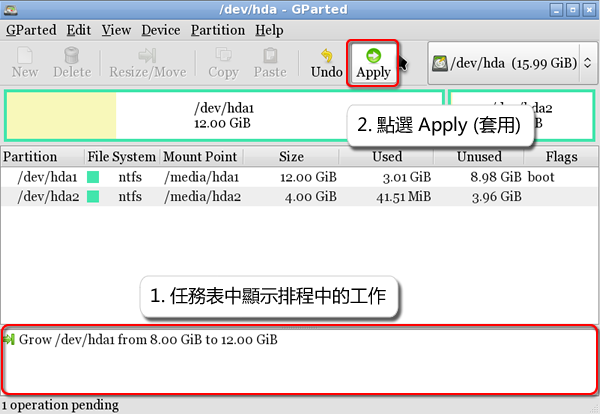
【步驟八】完成後，即可重新開機至 Windows，請記得移除開機光碟。
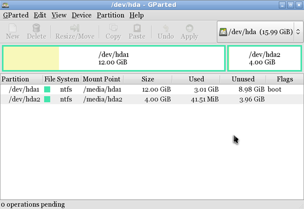
【步驟九】由於檔案系統為 ntfs ，系統在開機時會重新確認檔案系統的一致性，請務必讓此動作完成，以確保能作業系統能正常開機。
【步驟十】開機後，檢查 C 磁碟機是否新增容量成功。
參考資源
Parted Magic 官方網站
GParted 官方網站
InfraRecorder 官方網站
Wikipedia file system 詞條
Wikipedia disk partition 詞條
E-Mail：contact@openfoundry.org Address：台北市南港區研究院路2段128號 中央研究院資訊科學研究所 . 隱私權條款. 使用條款

評論